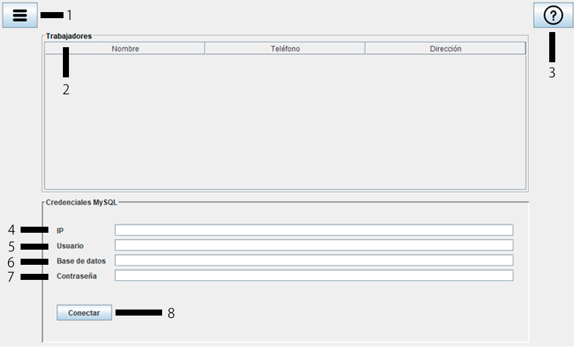
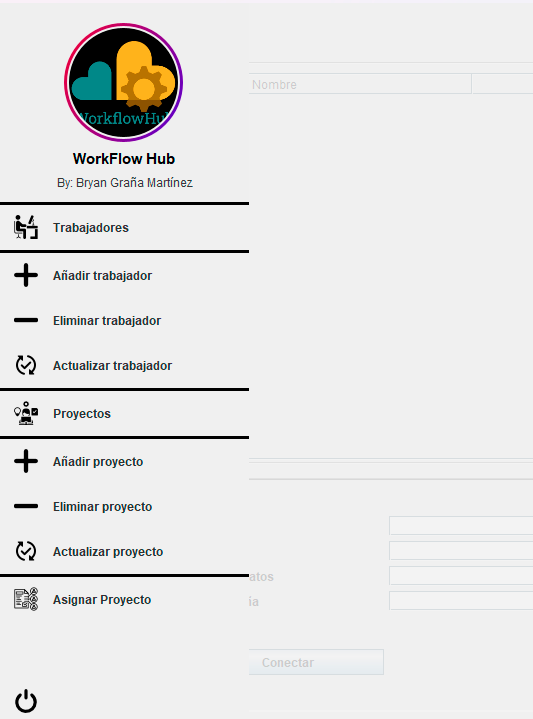

NOTA IMPORTANTE: TODAS LAS VENTANAS ABIERTAS DESDE LA PANTALLA PRINCIPAL SERÁN MODALES, ES DECIR, QUE HASTA QUE UNA DE ESTAS SEA CERRADA, NO SE PODRÁ ABRIR OTRA.
Puedes pulsar F1 cuando estés en un campo de texto para obtener ayuda en otras ventanas.
En la página principal encontrarás diferentes campos de texto mostrados en la siguiente imagen:

1.- Botón que abre el siguiente menú lateral con las opciones para hacer

2.- Tabla en la que se muestran los trabajadores que hay en la empresa una vez la conexión se ha realizado con éxito.
3.- Botón de la ayuda.
4.- Dirección IP del servidor MySQL al que te conectarás. La IP suele ser 000.000.000.000 en donde cada 3 ceros el valor puede ir desde 0 hasta 255 siendo el valor máximo 255.255.255.255 (no se usa para direcciones IP).
5.- Usuario de MySQL que usarás para realizar la conexión a la base de datos.
6.- Nombre de la base de datos a la que te vas a conectar.
7.- Contraseña del usuario que usarás para la conexión a la base de datos.
8.- Botón para conectar a la base de datos una vez todas las credenciales están añadidas. Informará en de conexión correcto o problemas en la conexión.